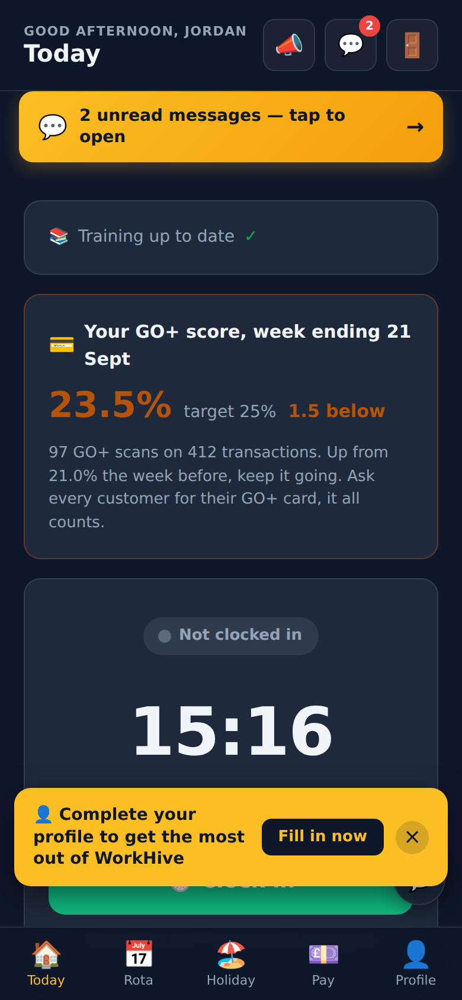
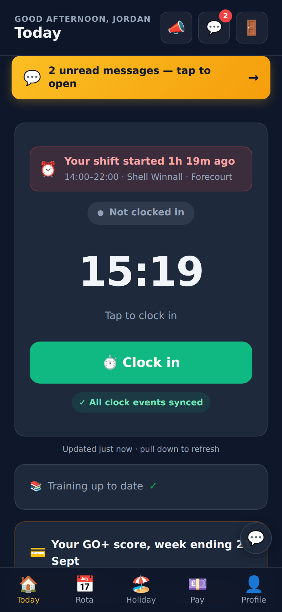
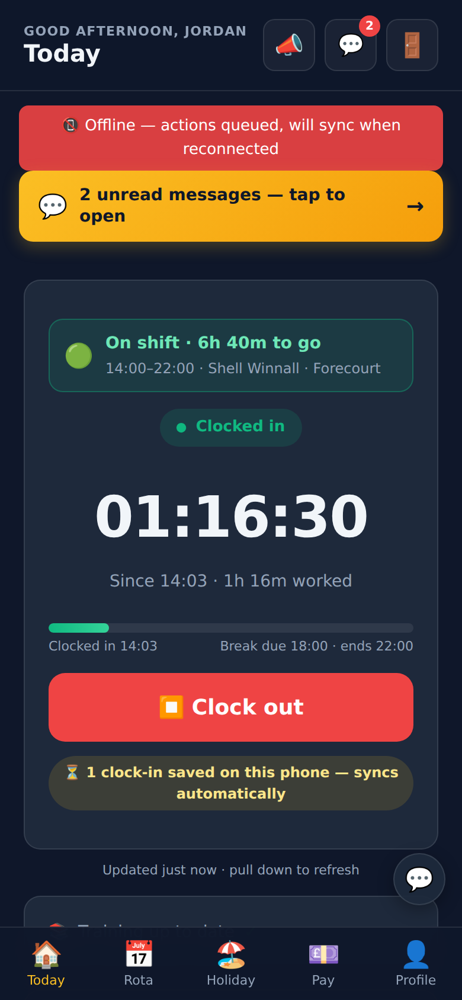
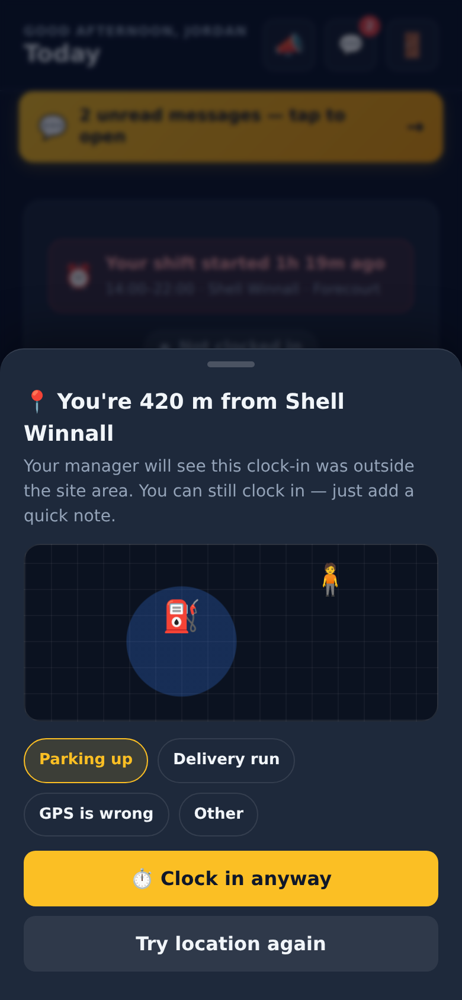
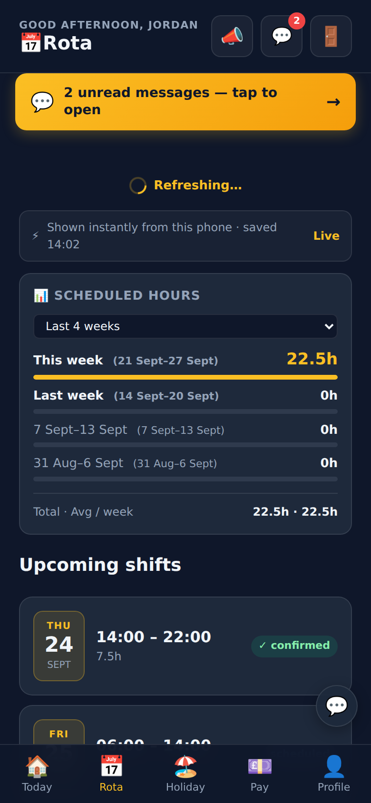
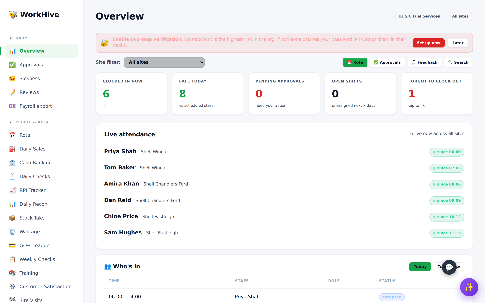
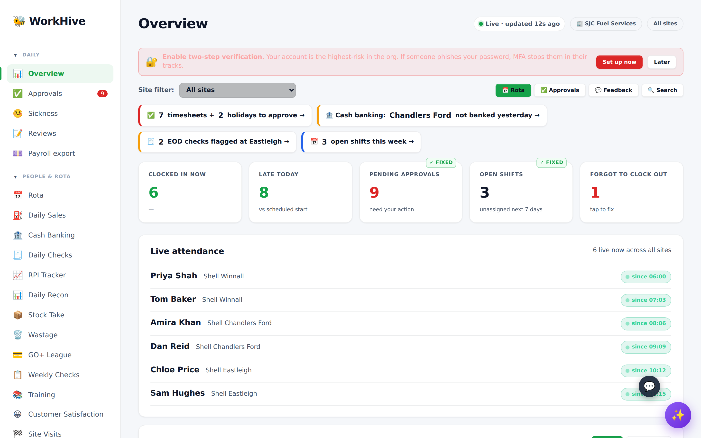
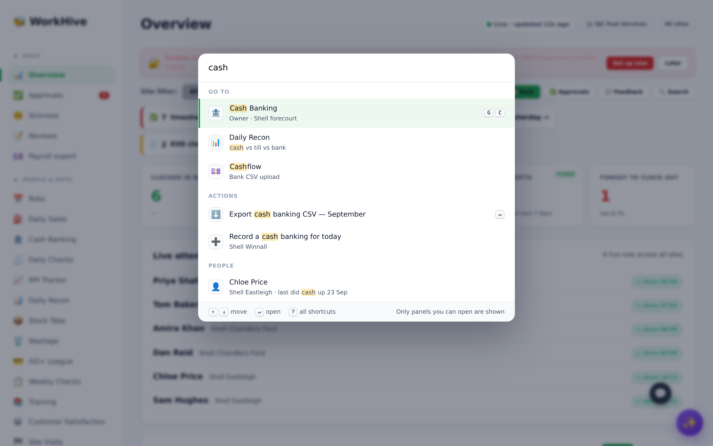
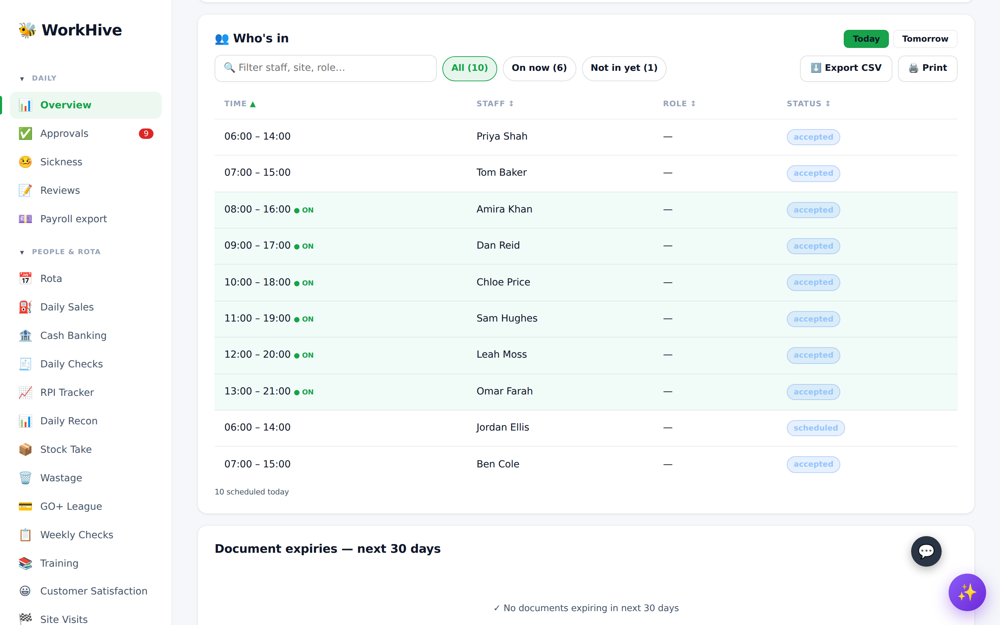
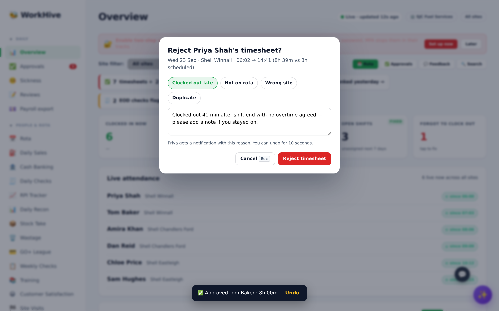

A review of app.html (staff) and dashboard.html (managers and owner), with a list of JavaScript changes and screenshots of how each one looks. Everything is added on top of the current app. No tables, permissions or pay data change, and every change is designed to make pages faster, not slower.
These are in the live code today. The first three can lose clock-in or clock-out times, so hours go missing from payroll. Each fix is small and self-contained.
An offline clock-in is saved on the phone without a record id. When that person then clocks out, still offline, the saved clock-out points at "no id". When the phone comes back online, the update matches nothing and is thrown away. The shift stays open until the auto-close runs.
The app only queues a clock event when the phone reports it is fully offline. On one bar of signal the phone still says "online", the request fails, and the only thing left is an error message. The tap is gone.
The queue is sent only when the phone switches from offline to online. If the app is closed while offline, saved events can sit on the phone for days. After a reload the app shows "Not clocked in" even though a clock-in is waiting, which invites a second clock-in.
These Overview tiles ask the database for a count, then read the (empty) list instead of the count. The Approvals badge in the sidebar is also always hidden, so managers never see the nudge.
count instead of data.lengthThe tile calls a function that doesn't exist, so it spins forever. The real function has a different name.
loadResources → loadStaffResourcesStaff open the app mainly to clock in. Today the clock button is below the fold on a busy day, and a profile reminder can cover it. The plan puts the clock and the shift in charge of the home screen.
Shows "Your shift started 1h 18m ago" in red when someone is late, or "Starts in 2h 15m". Once clocked in: a live hours:minutes:seconds timer, a progress bar, break due and finish time. Built from shift data the app already loads, so no extra database calls.
A chip under the button: "All clock events synced", or "1 clock-in saved on this phone, syncs automatically". Staff and managers can see that nothing is lost. Goes with bug fixes 1 to 3.
Replaces the browser's "OK / Cancel" pop-up in the middle of clocking in. Shows how far away the phone is, lets the person tap a reason, and offers "Try location again".
Each tab keeps its last result in memory and shows it straight away while fresh data loads in the background. Pull down to refresh. The Today tab refreshes itself when the app comes back to the front. Fewer spinners and fewer repeat database calls.
Push notifications already send staff to /app#rota, but the app ignores the #rota part. Reading it opens the right tab, and the phone's back button moves between tabs.
A short vibration and a "Clocked in 14:03" toast. After an error the button is reset instead of stuck on "Getting location…".
Holiday requests and pay queries save a draft if the sheet is closed by accident. The submit button is disabled while sending, so a double tap can't create two requests.
The profile reminder moves to the Profile tab. The offline banner sits in the page instead of floating over the messages bar.





Today clocking in or out gives no feedback: the button just changes colour. These short moments say thank you, and they appear only after the clock event has been saved, so they never slow it down or get in its way.
The button pulses, a green tick draws itself, a small burst of confetti, and a message such as "You're in, Jordan! Have a great shift". A short double vibration confirms it. Chips show "1 min early" and streaks like "5 on-time shifts in a row". Being late shows no chip, never a telling-off.
"Thanks Jordan, great work today" with a waving hand, and the hours worked, break and week total counting up. The message changes through the day ("enjoy your evening" after 5pm).
First shift, 10th, 25th, 50th, 100th, 250th and 500th. Kept rare so they stay special.
"Morning, early bird" before 7am, "Drive safe out there" for drivers, "Let's go ⛽" on the forecourt. If the phone has no signal, the moment still plays and adds "Saved on this phone, will sync".
Cards slide in gently when the app opens, and the tab icon bounces when tapped. The clock button shrinks slightly under the thumb.
The moment plays after the clock event is saved or queued. It closes itself after 4 seconds, or with one tap.
About 4 KB of plain JavaScript and CSS, with no animation library. The confetti uses a single canvas that removes itself when finished.
If "reduce motion" is on, the message still shows but there's no confetti, bounce or count-up. Vibration only works on phones that support it.
The streak and shift count come from one small count query that runs after the clock-in is saved. The moment doesn't wait for it.
The dashboard is one 27,000-line file that runs every panel's code on every visit, with 459 database queries mostly run one after another. These changes make the daily jobs quicker without rewriting any panel.
Fixes the 0 counts. Adds one row of actionable items above the tiles (approvals, cash not banked, flagged end-of-day checks, open shifts). Each one opens the right panel.
/dashboard#cash opens Cash Banking. Refreshing keeps you on the same panel, and panels can be bookmarked. It goes through the existing switchPanel, so owner-only and HR-only checks still apply.
The current search lists 17 panels and misses every forecourt panel (sales, cash, recon, checks, GO+, stock, RPI, wastage, visits, bank). The new version adds them plus actions and people, and only shows panels the user can open.
One small helper adds a filter box, sortable column headers and CSV export to tables. Today only payroll sorts, and only five panels export.
Replaces 16 alert, 72 confirm and 12 prompt pop-ups. Rejections get reason chips, and approvals get a 10-second Undo instead of an "Are you sure?" step.
Eleven timers poll the database, most every 60 seconds, even in a background tab. Pausing them while the tab is hidden and running them together on one timer cuts requests. A "Live · updated 12s ago" pill shows how fresh the data is.
Leaflet loads before the page can start (line 2589), but only Site Visits uses it. Loading it on demand gives a quicker first screen.
Live attendance, late today and open shifts wait for each other one by one. Running them together with Promise.all makes the Overview appear sooner, with the same queries and results.
Switching panels or closing the tab mid-edit loses the input without warning. Only Site Visits saves a draft today. Add a warning to all panel forms.





New code lives in small separate files loaded after the page (defer). Existing functions keep working. The only edits to current code are the five bug fixes, each a few lines.
No new tables, columns or security rules. Every save still goes through the same Supabase calls, so security rules and audit logs are unchanged.
Instant tabs show the last copy, then always reload. Clock state, pay and approvals are never decided from a saved copy.
All new code together stays under 15 KB compressed. Page load time and number of requests are measured before and after each release, and must not get worse.
New unit tests for the offline queue and the count fix sit next to the existing ones in test/. Everything runs through npm test and the pre-deploy check.
Each upgrade has an on/off flag, so any one can be turned off without a redeploy if something looks wrong.
How the screenshots were made: the real app.html and dashboard.html from the workhive repo, run in a browser with made-up test staff and shifts instead of the live database. No production data was used. The "After" screens come from a working prototype script loaded on top of those real pages. Some example items (for example "Chandlers Ford not banked yesterday") are illustrative wording for the needs-attention row.